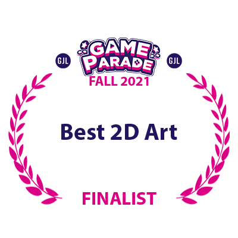

Sumbission to
Has ranked 3rd out of 53 submissions in a community vote and achieved a score of 4/5
Received awards:

Description:
First Game Jam - First challange
I consider Carcasscade to be my first serious game project, it is also the first one that I have released. The game was made for The Game Parade Fall 2021, a 7 day long game jam hosted by Game Jobs Live. Developing a full game in a short time period has done a great deal in teaching me how to work with deadlines and plan my projects.
The brainstorm
The first full day was spent on the drawing board, thinking of ways to incorporate the jam’s theme of “Leaving something behind” as an interesting mechanic that would enhance the experience with the game. After a lot of brainstorming, I have come up with the idea of a platformer, where each death leaves behind a body that can be used as a platform. It follows the theme closely, and allows for many interesting mechanics.
The save sytem
Of course, the first difficulty was figuring out how to make it work. In order for the bodies to be left behind in the right spot upon the scene resetting, I had to implement a save system. It was the first time that I attempted it, and it worked perfectly. Every death saves a position, and adds it to a list that is stored in a file. At the start of the scene, the list of coordinates is loaded and a prefab object is initialised on each of them, thus creating the bodies.
Using skills in game design
Since I had a working save system, I couldn’t just stop there. I decided to go an extra mile and introduce other mechanics that would be saved along the bodies. Carcasscade is a game with an open world, what makes it unique is that there is only one starting point and no checkpoints in between. The way a player can progress through the game is by opening checkpoints, that make the path they take a lot easier in the following attempts. The save system checks which shortcuts have been unlocked and initialises the scene elements in an appropriate state. All progress can be reset by starting a new game, which clears the list of bodies and locks all the shortcuts.
Working achievements
Another thing that was introduced is a save system independent of starting a new game, that manages achievements. After the player completes a specific task, a trophy is unlocked in the trophy section and remains unlocked even after starting a new game, that is due to the use of the player prefs over the regular save file that is used to store other data.\n\n
The aftermath
The game has done reasonably well, and has received good ratings during the game jam. The feedback provided both by users and by industry professionals that have reviewed the game, helped me understand many principles of good game design. The game was made by a team of 2, with me working on all the programming, pixel art and game design. The other member of the team has provided the cover art for the game, as well as the background art.